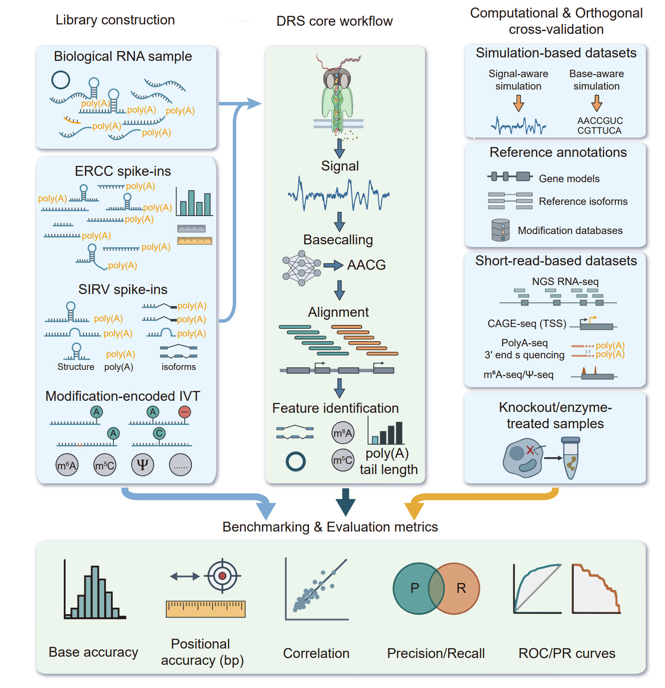

Designing, validating, and benchmarking DRS: an integrated framework
Experimental design and benchmarking strategies for DRS
DRS is transitioning from a niche methodology to a general‑purpose platform for transcriptomic and epitranscriptomic research, supported by rapid advances in experimental workflows, specialized computational algorithms, and curated databases that collectively enable more comprehensive, accurate, and scalable analyses of RNA biology [51], [120]. Accordingly, the adoption of standardized experimental and algorithmic frameworks is essential to achieve robust, reproducible, and comparable DRS algorithm development and benchmarking [547], [548], [549], [550]. Extensive benchmarking and methodological studies have been conducted and thoroughly discussed for cDNA‑based ONT and PacBio sequencing platforms [81], [83], [84], [216], [551]. In contrast, this section focuses on experimental design considerations and benchmarking strategies specifically relevant to the development and evaluation of DRS algorithms.
External spike‑In controls as experimental ground truths in DRS
Biological datasets vary substantially in sequencing depth, library chemistry, and genetic background, making sensitivity and specificity estimates difficult to compare directly across studies [552]. This challenge is further compounded by the inherent complexity of the epitranscriptome, which encompasses diverse RNA modification types, strong sequence‑ and context‑dependent effects, and interactions among proximal modifications [241]. Consequently, spike‑in‑based controls and other well‑defined ground‑truth resources, which provide known sequences, concentrations, and modified or unmodified states, have become indispensable tools for method development, benchmarking, and comparative evaluation. These resources enable more stringent, reproducible, and comparable assessment of DRS approaches [241], [553], [554].
ERCC spike-ins
The External RNA Controls Consortium (ERCC) created ERCC RNA spike-in controls to reduce experimental variability and provide a standardized reference for calibrating and quality‑controlling RNA quantification across platforms [555], [556], [557], [558]. These controls comprise 92 synthetic, polyadenylated transcripts intended for incorporation into an RNA analysis experiment post-sample isolation, to evaluate against established performance standards. The ERCC transcripts vary in length from 250 to 2000 nt, resembling native eukaryotic mRNAs, and are provided as mixtures with specified sequences, lengths, and input concentrations across multiple orders of magnitude. Owing to their well-characterized and broad dynamic range of absolute input quantities, ERCCs are used as traceable rulers for assessing quantification sensitivity, accuracy, and detection limit analysis across microarrays and RNA‑seq [552], [557], [558], [559], [560], [561], [562].
However, ERCC spike‑ins consist of mono‑exonic, single‑isoform, unmodified transcripts and therefore primarily probe dynamic range, linearity, and limits of detection [553], [558]. Their lack of splicing and isoform diversity precludes evaluation of isoform‑level quantification and AS performance [553], [563]. Moreover, ERCCs do not recapitulate RNA secondary structure, degradation dynamics, or cellular RNA processing, making them poor surrogates for assessing degradation‑aware quantification or context‑dependent biases [481]. Consequently, while ERCCs are well suited for benchmarking error correction and dynamic range, they are inadequate for evaluating higher‑order features central to DRS, including TSS and TTS, isoform complexity, and RNA modifications, all of which represent key strengths and distinguishing advantages of DRS [564], [565].
SIRV spike‑ins
To capture transcriptional and post‑transcriptional complexity, the Spike-in RNA Variants (SIRV) controls offer tunable, transcript‑like RNAs with known ground truth that overcome several limitations of ERCC‑style controls [566], [567]. The SIRVs consist of 69 synthetic, polyadenylated artificial transcripts modeled on seven human reference genes (https://doi.org/10.1101/080747). These multi-exonic and predefined isoform variants can be mixed at known concentrations, enabling controlled benchmarking of alternative splicing, alternative TSS and TES, overlapping genes, antisense transcripts, and poly(A) length analysis workflows [81], [216], [537], [561], [563], [566], [568], [569], [570], [571], [572], [573], [574], [575]. Furthermore, SIRVs from human genes further yields modification‑free but sequence‑matched transcriptomes that act as negative controls for RNA‑modification detection in DRS, including k‑mer resolved false‑positive rate estimation [576], [577].
Unlike ERCC controls, SIRVs spike‑ins can be generated from real cDNA clones to recapitulate authentic splice isoforms and exon-intron structures [568], or from multi‑cell‑line cDNA pools to approximate the diversity of the human transcriptome [576]. Consequently, SIRVs serve as more faithful surrogates for endogenous RNAs while retaining exact sequence identity and input‑amount ground truth. Despite their advantages, SIRV spike-ins carry several inherent limitations. First, because SIRVs are synthesized via in vitro transcription, they lack native RNA modifications. Second, SIRVs do not recapitulate endogenous RNA secondary structures, limiting their utility for assessing structure-aware assessment. Third, the predefined isoform architecture of SIRVs does not capture the full diversity of RNA processing, such as non-canonical splicing, or intron retention observed in real transcriptomes. Therefore, while SIRVs are indispensable for isoform-level validation, they should be complemented with other orthogonal controls and computational methods when assessing native RNA features in DRS workflows.
Modification‑encoded IVT spike‑ins
By enabling direct interrogation of native RNA molecules and circumventing biases introduced by RT and amplification, DRS offers an unprecedented opportunity to map the spatial distribution and dynamics of RNA modifications, including m6A, m5C, Ψ, and others [9], [26], [34], [56], [58], [114], [118], [119], [120], [162], [179], [185], [186], [189], [192], [246], [388], [578], [579]. This capability has propelled epitranscriptomics into an era of full‑length transcript analysis with single‑molecule, single‑base resolution of RNA modifications. However, for DRS‑based modification detection, there remains no universally accepted gold standard that provides both single‑nucleotide resolution and accurate stoichiometry for most modification types [162], [241], [580].
To rigorously evaluate and compare the performance of DRS platforms and computational algorithms for RNA modification detection, the establishment of robust and reliable benchmarking standards is essential [577]. At present, the prevailing gold standard relies on synthetic spike‑in controls generated by IVT of RNAs containing site‑specific or motif‑defined modifications, introduced either through incorporation of modified nucleotides or via post‑transcriptional enzymatic treatment [567], [581], [582], [583], [584], [585], [586], [587], [588], [589], [590], [591], [592], [593]. These synthetic constructs, each paired with an isogenic unmodified control, provide explicit ground truth and enable systematic assessment at both site‑level and read‑level resolution, which is essential for training and validating supervised machine‑learning models for RNA modification identification [181], [241], [576], [577], [594].
Nevertheless, these engineered, modification‑encoded spike‑ins often fail to recapitulate endogenous modification stoichiometry, may not fully capture the native sequence and structural contexts that shape modification‑specific signal patterns, and typically evaluate only a single modification type per construct [116], [145], [161], [163], [182], [554], [595]. Consequently, they do not reflect the inherent complexity of the epitranscriptome, in which multiple modifications frequently co‑occur on the same RNA molecule. Addressing these limitations through the development of more physiologically relevant and structurally complex spike‑in standards, together with community‑endorsed benchmark datasets, will be critical for standardizing the field and advancing toward truly quantitative epitranscriptomic profiling (Figure 8 and Table S5).
{kind=link}

Figure 8. Experimental design and multi layer benchmarking framework for DRS. Schematic overview of complementary experimental and computational strategies used to develop, benchmark, and validate DRS algorithms across analytical layers. Synthetic spike‑in controls, including ERCC RNAs and customizable in vitro-transcribed (IVT) RNAs, provide defined ground truth for benchmarking quantification, isoform structure, transcript boundaries, and poly(A) tail length. Modification-encoded IVT spike‑ins carrying site‑specific or motif‑defined RNA modifications enable supervised training and evaluation of modification‑calling algorithms. Simulation‑based datasets further complement experimental controls by enabling fully programmable, scalable benchmarking of sequence‑ and signal‑level features. Orthogonal biological resources, including curated genome annotations, epitranscriptomic databases, matched short‑read sequencing, and 5′/3′ end profiling assays, provide independent validation of transcript structure and modification calls. Genetic and enzymatic perturbations, such as writer/eraser knockouts or modification‑specific chemical treatments, offer causal validation of DRS‑derived features. Together, these resources support multi‑layer benchmarking from raw ionic current and basecalling accuracy to alignment, transcript reconstruction, quantification, and RNA modification detection, enabling robust, reproducible, and biologically grounded evaluation of DRS methods.
Simulation‑based benchmark datasets for DRS
Beyond the experimental use of exogenous RNA spike‑in as ground truth, simulation‑based benchmark datasets complement experimental controls by providing a fully programmable, scalable, and reproducible framework for algorithm validation [39], [596], [597], [598], [599], [600]. These synthetic datasets were generated by modeling the entire sequencing workflow, from RNA molecule sequences and nanopore current signals to base calling and downstream analyses, offering several unique advantages. Specialized tools can simulate not only nucleotide sequences but also the characteristic electrical signal perturbations induced by base‑level modifications and structural variations [596], [598], [599]. Together, these capabilities provide complete control over ground truth, ensure scalability and reproducibility, and enable isolated investigation of specific sources of error [599]. Consequently, simulation‑based data constitute a standardized, fully controllable, and cost‑effective resource for sequencing algorithm development, analytical workflow validation, and platform optimization [599]. This approach typically follows two complementary tracks, encompassing base‑aware sequence simulation and electrical signal‑aware current simulation.
Base‑aware simulation focuses on generating nucleotide sequences that closely approximate real sequencing data while reproducing both intrinsic biological features and technical biases introduced by experimental workflows. NanoSim is a data‑driven ONT read simulator that learns empirical models of read‑length distributions, error profiles, and sequence‑context-dependent biases from real ONT datasets to generate highly realistic DNA, cDNA, and RNA reads [601]. Trans‑NanoSim extends this framework to transcriptome sequencing by explicitly modeling transcript abundance, AS, and RNA‑specific characteristics, enabling accurate simulation of ONT RNA‑seq data [600]. PBSIM3 supports sequence simulation for whole‑genome and transcriptome sequencing on both PacBio and ONT platforms, including ONT direct RNA and direct cDNA protocols, by applying long‑read error models to transcriptome references [602]. However, it offers limited customization for RNA‑specific features such as poly(A) tail length variation. Badread is a flexible long-read simulator designed to generate long reads (PacBio and ONT) with user-controlled error rates, read lengths, chimeras, and sequencing artifacts. Unlike data-driven simulators, it prioritizes speed and stress-testing of analysis pipelines over learning detailed empirical error models from real data [603].
DeepSimulator is a deep learning-based ONT sequencing simulator that performs end‑to‑end modeling from DNA sequences to basecalled reads by generating synthetic electrical signals and associated base‑calling errors [596]. It captures context‑dependent relationships between nucleotide sequences and ionic current signals through pore‑aware models and incorporates mixed alpha distributions and Gaussian noise to realistically model signal resampling and experimental noise. However, it does not explicitly model RNA‑specific or DRS-specific properties. Squigulator is a lightweight signal-level simulator that converts nucleotide sequences into synthetic nanopore current traces using configurable noise and dwell-time models [599]. It is sequence-agnostic and fast, making it useful for algorithm testing and signal-processing development, but it lacks data-driven modeling of RNA biology and native DRS signal characteristics. Seq2Squiggle is a neural-network-based framework that predicts nanopore current signals directly from nucleotide sequences using learned sequence-to-signal mappings. While it can produce realistic squiggles when trained appropriately, existing models are typically trained on DNA or cDNA data, so accurate ONT DRS simulation requires retraining with native RNA signal data [597]. Compared with traditional k‑mer-based statistical models, its simulated signals exhibit substantially higher similarity to experimentally observed data, providing high‑fidelity training resources for the development and benchmarking of DRS algorithms.
Simulating RNA remains more challenging than DNA due to its secondary structure, diverse chemical modifications, slower nanopore translocation, and limited modeling of modification‑specific signal perturbations. Consequently, no fully validated end‑to‑end DRS simulator currently provides base‑sequence realism, RNA‑modification awareness, and isoform‑resolved ground truth. Fully realizing the potential of DRS for epitranscriptomics and single‑molecule RNA biology will require deeper integration of RNA‑specific biological features and advances in multimodal simulation frameworks (Figure 8 and Table S5).
Integrating annotations, short‑read data, and perturbations for DRS validation
While ERCCs and IVT spike‑ins provide precise experimental ground truth, comprehensive reference annotations and epitranscriptomic databases supply essential orthogonal biological context for cross‑validation and functional interpretation. For example, standard gene annotations in GTF/GFF format from RefSeq [604], Ensembl [605], or GENCODE [606] define canonical exon-intron structures, UTR, TSS, and TTS, enabling accurate evaluation of feature identification accuracy and performance in DRS data. In addition, specialized databases of transcription start and termination sites, such as refTSS [607] and PolyA_DB [608], integrate evidence from multiple experimental assays and provide critical references for determining whether DRS‑derived transcript boundaries are biologically plausible or instead reflect technical artifacts. For RNA modification analysis, curated public databases, such as RMBase [521], DirectRMDB [240], MODOMICS [609], and REDIportal [610], aggregate millions of modification sites identified by diverse experimental technologies. Overlap between DRS‑called sites and high‑confidence entries in these resources provides a strong positive prior, whereas systematic calls in genomic regions lacking modification evidence across large‑scale compendia may indicate model bias or systematic error. Moreover, integration with regulatory information (e.g., RNA‑binding protein sites, miRNA targets, and histone marks) enables assessment of whether putative false positives preferentially occur in structurally complex or regulatory‑dense regions, providing an additional layer of biological plausibility checking for DRS analyses [60], [611]. Together, these reference resources enable a more nuanced and biologically grounded evaluation of DRS performance.
Furthermore, short‑read sequencing data generated from the same samples as DRS provide high‑resolution, low‑error orthogonal evidence, making them powerful cross‑validation layers for benchmarking. For instance, conventional RNA‑seq robustly identifies exon-intron boundaries, splice junctions, and exon usage at high depth, and comparative analyses consistently show that short reads detect substantially more splice junctions than long reads, whereas long reads better resolve full‑length isoforms, highlighting their complementarity for evaluating transcript models and differential exon usage [35], [296], [382], [612], [613], [614], [615], [616]. Cap‑dependent 5′‑end assays, including CAGE [617], SLIC‑CAGE [618], ReCappable‑seq [619], csRNA‑seq [620], and TT‑TSS‑seq [621], provide single‑nucleotide-resolution maps of TSS. When integrated with DRS data, these resources enable systematic benchmarking of TSS detection accuracy by validating inferred start sites, identifying missed alternative promoters, and flagging spurious 5′ ends arising from truncation or mis‑priming artifacts. Similarly, 3′‑end-focused methods and computational pipelines (e.g., PAS-Seq [622], Term‑seq [623], RNAtag‑seq-based approaches [624], [625], and RNA‑seq-derived TTS inference) generate genome‑wide maps of TTS and 3′ UTRs. These enable systematic validation of DRS‑derived TTSs and PAS, as well as identification of alternative termination events that may be misassigned or missed by long reads. For RNA modification, short‑read immunoprecipitation‑ or chemistry‑based assays (e.g., m6A‑seq [17], [18], miCLIP [20], m6A-LAIC-Seq [130], GLORI [155], and related epitranscriptomic databases [521], [626]) provide population‑level enrichment maps. Overlap between DRS‑called modification sites and high‑confidence short‑read peaks increases confidence, whereas systematic DRS calls outside any enrichment regions help quantify false positives. Together, matched short‑read datasets provide independent, low‑error evidence for exon-intron structure, TSS, TTS, and modification‑enriched regions or base-pairs, enabling context‑stratified benchmarking and the identification of systematic DRS biases such as coverage dropouts, end truncation, or context‑specific miscalls. Combined with spike‑ins, simulation, and reference annotations, they form a robust, multi‑layer benchmarking framework for DRS.
Finally, an appropriate genetic and enzymatic perturbations provide causal validation of DRS-derived features. Including gene knockouts and enzyme-treated samples alongside wild type greatly strengthens verification of DRS analyses, especially for RNA modification detection and interpretation. For example, knockdown or knockout RNA‑modifying enzymes (writers like METTL3 / METTL5, or corresponding erasers like FTO, ALKBH5) should abolish or reduce the DRS modification signal at their target sites, providing direct causal evidence that a DRS‑called site is genuine [627], [628], [629], [630]. METTL3 and ALKBH5 perturbations have been used to confirm m6A sites called from DRS or short‑read-based models, with loss/gain of signal at DRACH motifs supporting true sites [52], [627]. Targeted nanopore DRS of rRNA, coupled to CRISPR‑engineered loss of specific rRNA modification enzymes, allows direct comparison of WT versus KO DRS signatures at nucleotide resolution, enabling confident assignment of multiple rRNA modification classes without prior site knowledge [631]. Similarly, enzyme‑based removal or oxidative tagging approaches, such as FTO‑assisted m6A selective chemical labeling (m6A‑SEAL) and DNAzyme‑based methylation profiling of RNA (DAMP‑RNA), generating controlled gain, loss, or relabeling of specific RNA modifications [22], [116], [632], [633]. These assays provide orthogonal measurements that can be directly compared with DRS‑inferred modification presence and stoichiometry, enabling validation and refinement of nanopore‑based epitranscriptome maps. In brief, using gene knockouts and enzyme‑treated controls alongside DRS offers causal, site‑specific evidence that strongly verifies modification calls and improves confidence in DRS‑based epitranscriptome maps (Figure 8 and Table S5).
Taken together, ERCCs, IVT controls, and simulation‑based datasets provide precise experimental and computational ground truth for DRS benchmarking, but cannot fully capture endogenous RNA complexity. Complementing these with knockout or inhibitor perturbations, orthogonal NGS assays, and curated resources such as DirectRMDB supplies the independent biological context needed for robust cross‑validation and biologically grounded interpretation of DRS performance.
Multi‑layer benchmarking metrics for DRS
Because nanopore DRS spans multiple analytical layers, from raw ionic current to high‑level transcriptomic features, rigorous benchmarking is essential for evaluating DRS methods. As no single reference provides absolute ground truth across all stages, effective benchmarking relies on cross‑validation using experimental spike‑ins, simulation‑based standards, and orthogonal sequencing technologies, with metrics tailored to each analytical layer.
At the raw current signal analytical level, benchmarking focuses on signal fidelity and basecalling accuracy. Core metrics include per‑base error rates, substitution, insertion, and deletion frequencies, and error profiles stratified by nucleotide context, homopolymer length, and neighboring base composition [40], [41], [54], [241], [334], [634]. In DRS, length‑dependent error profiling is particularly important, as systematic 3′ bias, premature read truncation, and signal decay toward the 5′ end directly affect transcript completeness and downstream feature calling [54], [480], [635], [636]. Modified and unmodified isogenic spike‑ins provide essential controls for evaluating modification‑associated basecalling errors, including systematic substitutions, elevated indel rates, or local confidence drops around modified residues. Additional benchmarking approaches include comparing per‑read quality scores with empirical error rates, assessing calibration of basecaller confidence estimates, and evaluating the robustness of basecalling across RNA length, sequence complexity, and modification density [54], [114].
Alignment benchmarking evaluates how accurately basecalled reads are mapped to reference sequences and how mapping uncertainty propagates to downstream analyses. Standard metrics include overall mapping rate, unique versus multi‑mapping fractions, mismatch and indel rates in aligned regions, soft‑clipping frequency, particularly at 5′ ends, and the incidence of chimeric or split alignments [637], [638], [639]. Because DRS reads often exhibit truncation and variable error profiles, alignment accuracy should be evaluated as a function of read length, sequence context [496], [640], [641]. Synthetic controls and cross‑species spike‑ins are frequently used to estimate false‑positive alignment rates and reference ambiguity [563], [642], [643], [644]. Benchmarking also commonly assesses positional accuracy at transcript boundaries, such as deviations between aligned read ends and known transcription start or termination sites [645], [646], [647]. Comparative evaluation of splice‑aware and splice‑agnostic aligners, as well as RNA‑specific versus DNA‑derived alignment heuristics, is particularly important, as alignment choices can strongly influence isoform reconstruction, junction recall, and false‑junction rate [645], [647], [648].
Feature calling represents the primary analytical value of DRS and therefore requires task‑specific benchmarking strategies. For TSS and TTS detection, predicted sites are compared with orthogonal references such as CAGE‑seq or PolyA‑seq using strand‑aware distance thresholds (e.g., ± 10−50 bp) [621], [649], [650], [651]. Performance is typically summarized using precision, recall, F1 score, positional bias, and clustering consistency across replicates [619], [649], [652]. Isoform reconstruction accuracy is evaluated by structural concordance with known transcript models or IVT standards, reporting sensitivity and precision at the transcript, exon, or splice‑junction level [13], [90], [219], [496], [653], [654]. Quantitative benchmarking compares observed expression estimates with known input concentrations from spike‑ins or synthetic mixtures. Pearson or Spearman correlation coefficients are commonly reported but are insufficient alone and should be complemented by metrics such as mean absolute log fold‑change, dynamic range, detection limits, and coefficient of variation across replicates.
RNA modification detection is typically evaluated using modified and unmodified isogenic controls, reporting receiver operating characteristic (ROC) and precision-recall (PR) curves, alongside false‑positive rates estimated from negative controls, and stoichiometry estimation accuracy, positional uncertainty, and sensitivity to neighboring sequence context [56], [62], [114], [116], [241], [655]. Similar task‑specific frameworks apply to poly(A) tail length estimation, circular RNA detection, and RNA structure inference, each requiring tailored ground truth and orthogonal validation [537], [656], [657], [658], [659].
Importantly, no single metric or benchmarking layer is sufficient to characterize DRS performance. Effective evaluation therefore requires consistent performance across analytical layers and validation sources, with explicit reporting of failure modes such as truncation bias, context‑specific miscalls, or systematic alignment errors. Together, this multi‑metric, cross‑validated benchmarking framework enables biologically grounded assessment of DRS methods, facilitates fair comparison between tools, and ensures that reported advances reflect genuine methodological progress rather than dataset‑specific optimizations (Figure 8 and Table S5).